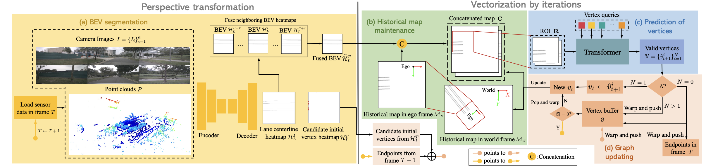

CenterLineDet: CenterLine Graph Detection for Road Lanes with Vehicle-mounted Sensors by Transformer for HD Map Generation
Authors: Zhenhua Xu, Yuxuan Liu, Yuxiang Sun, Ming Liu and Lujia Wang
Status
Accepted by ICRA 2023.
Abstract
With the fast development of autonomous driving technologies, there is an increasing demand for high-definition (HD) maps, which provide reliable and robust prior information about the static part of the traffic environments. As one of the important elements in HD maps, road lane centerline is critical for downstream tasks, such as prediction and planning. Manually annotating centerlines for road lanes in HD maps is labor-intensive, expensive and inefficient, severely restricting the wide applications of autonomous driving systems. Previous work seldom explores the lane centerline detection problem due to the complicated topology and severe overlapping issues of lane centerlines. In this paper, we propose a novel method named CenterLineDet to detect lane centerlines for automatic HD map generation. Our CenterLineDet is trained by imitation learning and can effectively detect the graph of centerlines with vehicle-mounted sensors (i.e., six cameras and one LiDAR) through iterations. Due to the use of the DETR-like transformer network, CenterLineDet can handle complicated graph topology, such as lane intersections. The proposed approach is evaluated on the large-scale public dataset NuScenes. The superiority of our CenterLineDet is demonstrated by the comparative results.
Paper
Supplymentary document
More details of our implementation and extra visualization are provided in our supplementary document.
Implementation Code
Inference code is release at our github page.
Demo video
System diagram
